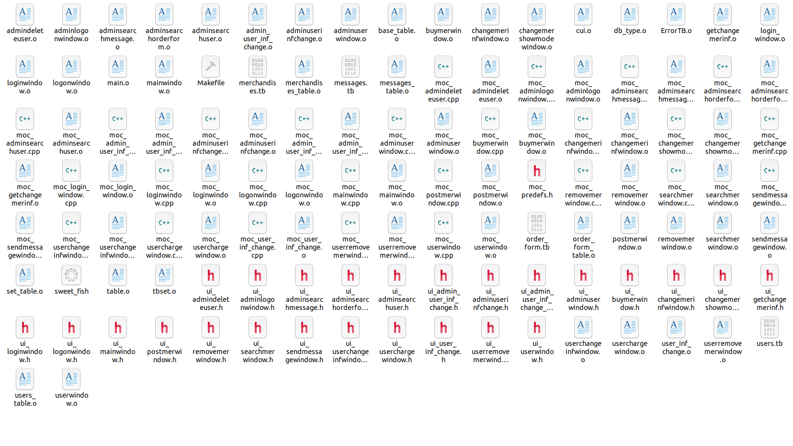

拓展功能(x)
卷分功能(√)
(小声
优美的按钮图案与配色设计，价值两百万的文本框圆角设计，我愿称之为华丽的UI界面
具体界面可以现场展示或在PPT中展示
在本程序源码当中，我基本完成了一个极低效率的sql引擎，使程序的从用户、到商品、到订单再到留言都是统一的数据表对象，并成功提供各类接口(这也是为什么不同类型表格能够在同一个GUI表格中展示)，下面是我将sql伪代码转化成的tables的接口
sql::CREATE TABLE {table} ({{var_name var_type_id(var_size),} for var in vars_list});
table(int vars_num,const vector<fixed_chars> &vars_name,
const vector<int> &vars_type_id,const vector<int> &vars_size,int counter=0,
char pre_token='A',bool open_map_accelerate= false);
sql::INSERT INTO {table} VALUES ({value for value in values});
void insert(const vector<db_type> &values);
sql::SELECT * FROM {table} WHERE {table[td+key]}(*judge){value};
table select(int td_key,const db_type &value,bool (*judge)(const db_type&,const db_type&))const;
sql::UPDATE {table} SET {table[to_key]}={to_value} WHERE {table[td_key]}(*judge){pre_value};
void update(int td_key,const db_type &pre_value,int to_key,
const db_type &to_value,bool (*judge)(const db_type&,const db_type&));
sql::DELETE from {table} WHERE {table[td+key]}(*judge){value};
void Delete(int td_key,const db_type &value,bool (*judge)(const db_type&,const db_type&));
sql::SELECT * FROM {table} ORDER BY {table[td_key]} {sort_lesser?}ASC{:}DESC;
void tr_sort(int td_key,bool sort_lesser);
table tr_sorted(int td_key,bool sort_lesser)const;
sql::SELECT {table[td_key] for td_key in td_vars} FROM {table};
table sub_table(const vector<int> &td_vars)const;
sql::SELECT * FROM {table} LIMIT {limit_num};
table limit(int limit_num)const;
普通用户登录之后，在菜单栏 -> 留言操作中有下列操作
点击查看留言选项，对应留言将显示到主窗口主表格视图上
该功能使用方法:
本程序将商品的
作为排序键值，选择对键值进行顺序\倒叙排序，并设置排除下架、售出商品选项，将根据商品陈列选项调整过的表格重新显示在主表格视图当中，点击修改商品查看选项按钮即可使用该功能
本程序可根据商品
进行商品搜索，点击搜索商品按钮即可使用该功能
本程序遇到几乎所有输入错误都会弹出含有大红色错误感叹号的错误提示框，而源代码采用异常处理的 throw - try - catch 三连，使错误提示变得灵活，以下是程序会弹出的部分错误提示

上面是整个代码工程编译生成的所有类头文件，连接文件以及QT-UI界面生成的头文件....
不说了，肝疼，呜呜呜